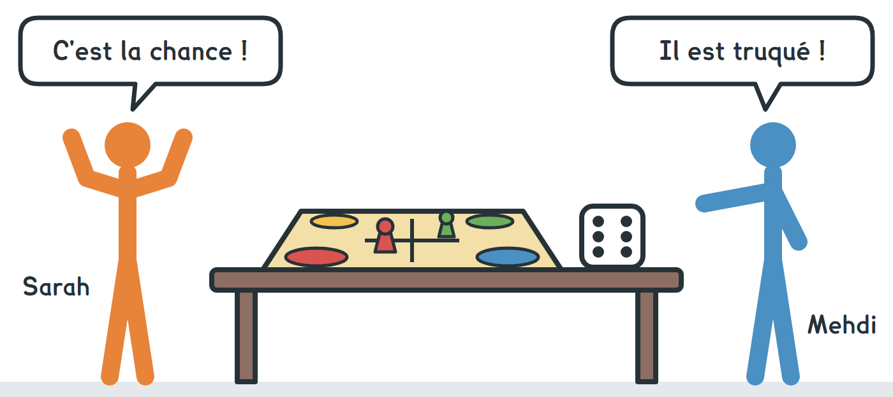
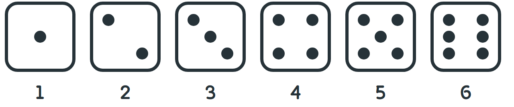
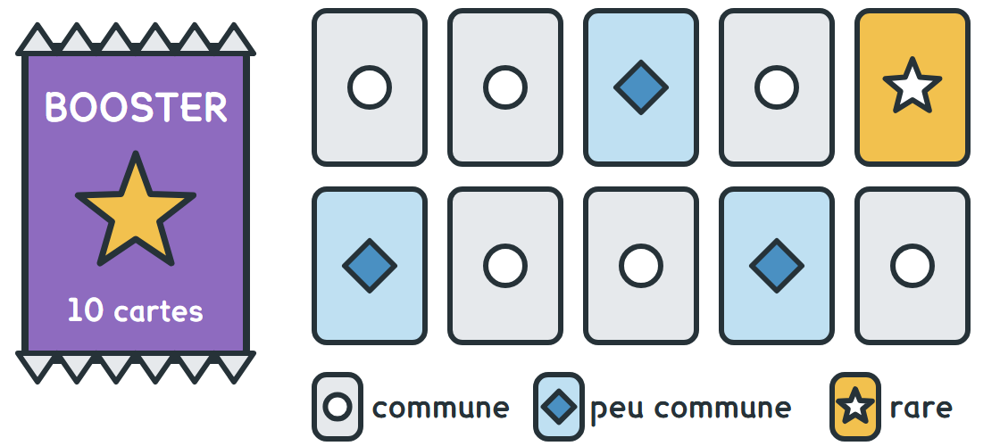
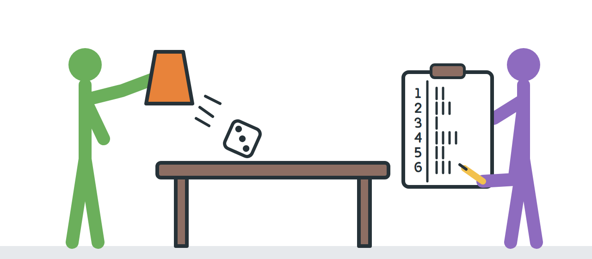

CAP Électricien · 1re année
Une chance sur six se lit sur les faces du dé. Trente lancers donnent autre chose, et ce n'est pas la même chose d'un binôme à l'autre.
3 questions · 4 exercices · 19 items d'entraînement · 4 figures
Savoirs travaillés

Un dé truqué se voit en combien de lancers ? Écris un nombre avant de commencer : on relira ta réponse à la fin de la séquence.

Lancer un dé est une expérience aléatoire : on ne sait pas d’avance ce qui sort. Les six résultats possibles sont les issues. « Faire un nombre pair » est un événement : il gagne avec les faces 2, 4 et 6.
probabilité = issues qui gagnent ÷ toutes les issues
Faire 6 : 1 issue sur 6, soit 1/6, environ 0,17.
Série · SP
Une probabilité est toujours entre 0 et 1. 0, c’est impossible : faire 7 avec un dé. 1, c’est certain : faire un nombre de 1 à 6.

Inès tire une carte au hasard, sans regarder. « Pas la rare » est le contraire de « la rare » : les deux probabilités font 1 à elles deux, puisque la carte tirée est forcément l’une ou l’autre.
Série · SP

On trace un trait par lancer : le nombre de traits d’une face est son effectif. Le nombre de lancers, 30, est l’effectif total.
fréquence = effectif ÷ effectif total
6 fois le 6 sur 30 lancers : 6 ÷ 30 = 0,2.
Exercice · SP
Sur 30 lancers, Léo et Nina ont eu 4 fois le 6. Quelle est la fréquence du 6, arrondie au centième ?
Prendre la fréquence pour la probabilité. Un binôme trouve 0,3, le binôme voisin 0,1, avec le même genre de dé. Sur 30 lancers, la fréquence fluctue : elle change d’un essai à l’autre, autour de 1/6.
Série · CN
Série · CN
Exercice · SP
Un dé de jeu de rôle a 20 faces, de 1 à 20. Quelle est la probabilité de faire 15 ou plus, en nombre décimal ?
Exercice · SP
Avec deux dés, il y a 36 façons de tomber. Six d’entre elles sont des doubles : 1 et 1, 2 et 2, jusqu’à 6 et 6. Quelle est la probabilité de faire un double, arrondie au centième ?
Exercice · SP
Mehdi dit : « En six lancers, je suis sûr d’avoir un 6. » A-t-il raison ? Répondre en une ou deux phrases.
Une probabilité se lit sur les issues : faire 6, c’est une chance sur six. Une fréquence se mesure en lançant, et sur 30 lancers elle change d’un binôme à l’autre : elle fluctue.
Ce site rappelle la méthode. Aucun corrigé, rien n'est noté.